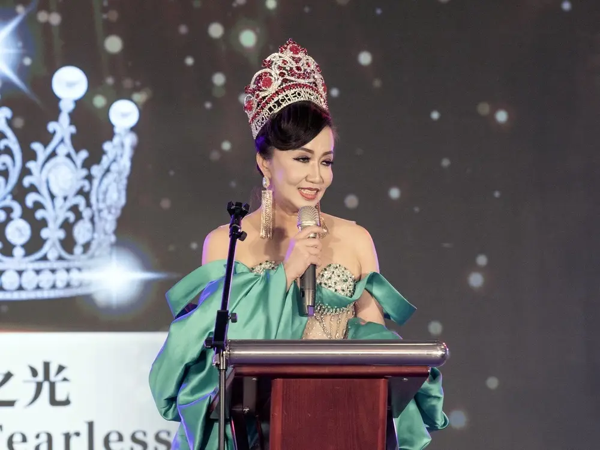
最強的一張牌
國際賽事主席
2025 年世界旗袍皇后國際大賽全球總決賽在台南登場，15 個國家與地區的佳麗齊聚府城。主題「無畏之光」，賽前六天五夜培訓加上畢業典禮，從接風宴、嘉南文化之旅、志工公益日到才藝之夜與主題走秀，一場賽事，走成一趟文化外交。
她走過選手的路，也走過低潮的路。如今，她把這些路都變成別人的舞台。
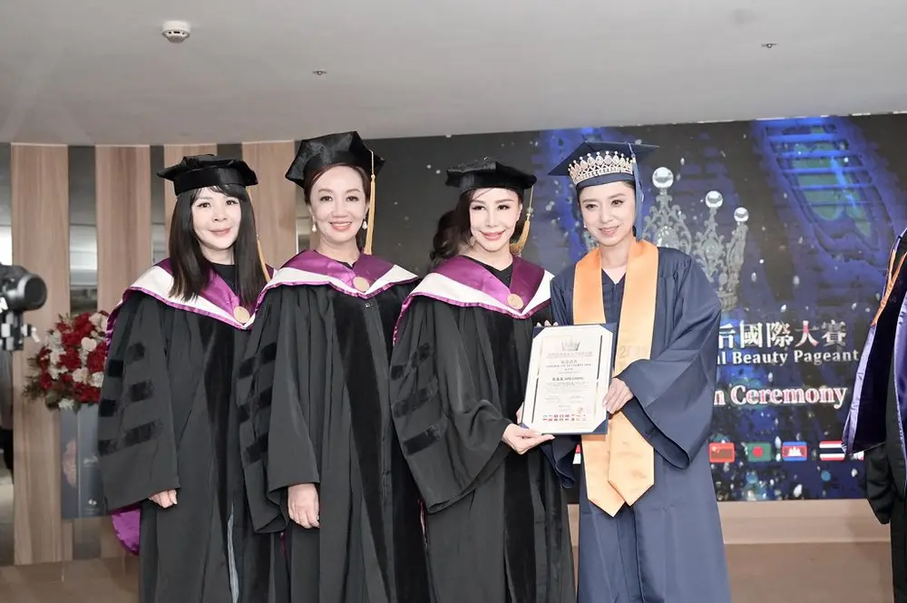
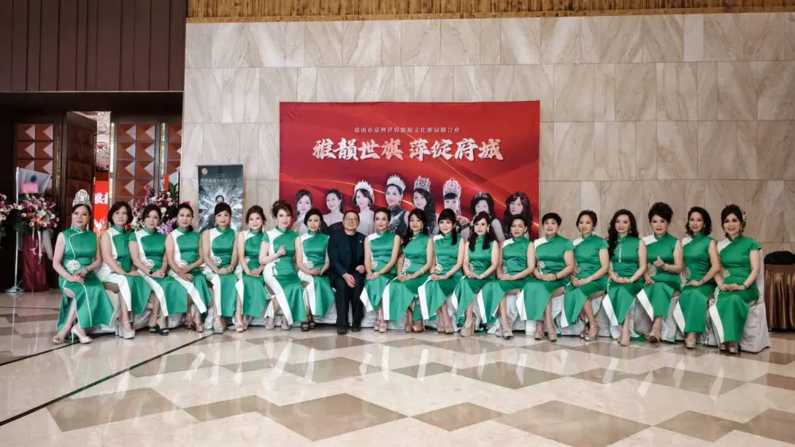
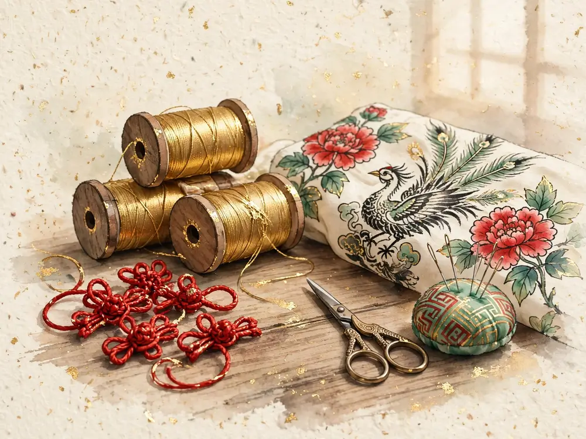
辦國際賽、走古蹟、帶團練、組歌聲——她把旗袍從一件衣服，做成一座城市的文化工程。

2025 年世界旗袍皇后國際大賽全球總決賽在台南登場，15 個國家與地區的佳麗齊聚府城。主題「無畏之光」，賽前六天五夜培訓加上畢業典禮，從接風宴、嘉南文化之旅、志工公益日到才藝之夜與主題走秀，一場賽事，走成一趟文化外交。
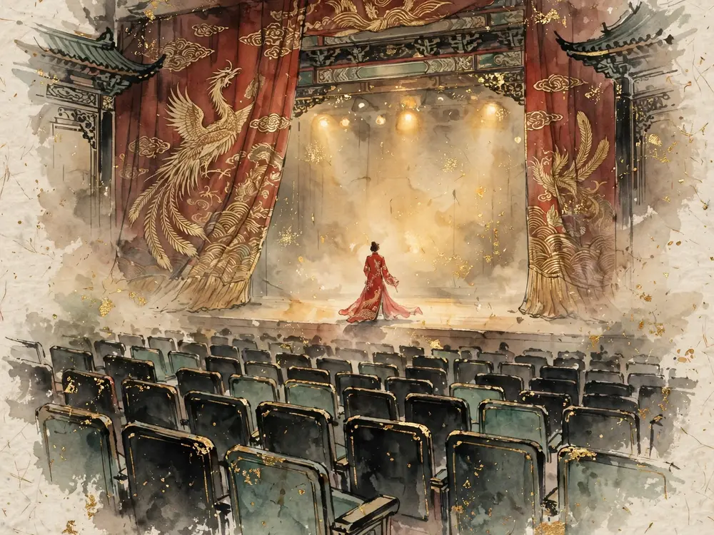
民族服飾、旗袍剪紙走秀、當代 VOGUE 團體秀、改良式旗袍秀融合音樂劇，傳統與現代同台。
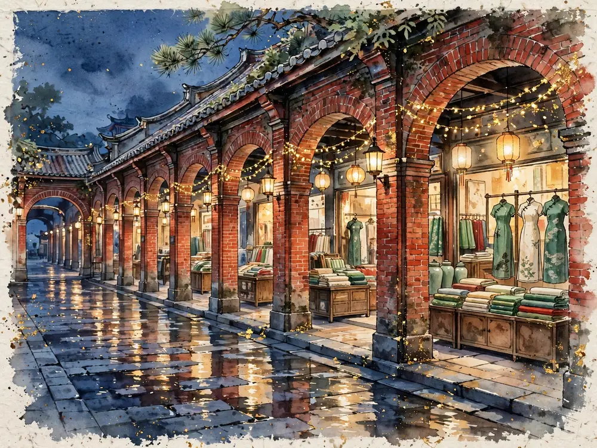
百年西市場變身時尚伸展台，知事官邸辦起爵士晚宴，讓旗袍走進府城的歷史現場。
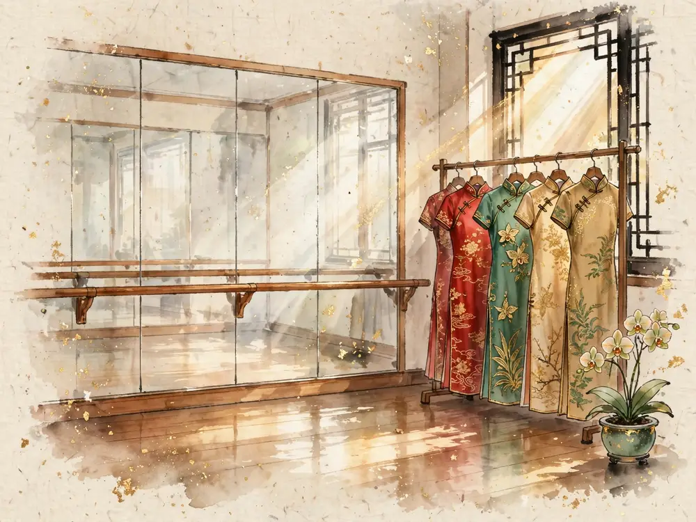
每週固定團練、系統化課程、舞台實作，陪伴女性在人生不同階段重新找到自信、站上舞台。
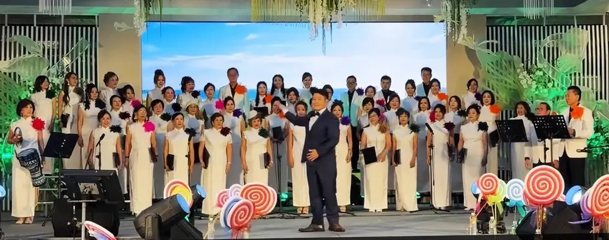
2026 年成立合唱團，首次參賽即奪紅白藝能大賞白隊總冠軍；歌聲、爵士、音樂劇，跨界都玩。
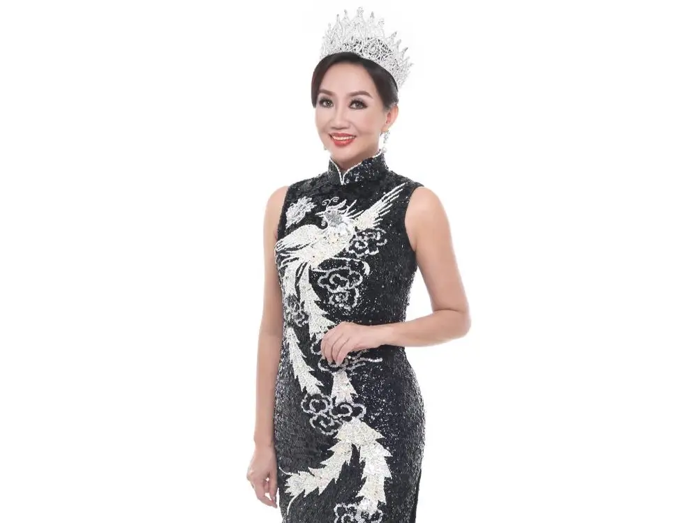
點照片上的數字，看每個細節的說法。
后冠不只是榮耀，更是一種使命。戴上它，代表要為台上每一位女性負責——讓她們被看見，也看見自己。
照片：劉雅萍鳳凰亮片旗袍棚拍。（圖／台灣世旗提供）
2025 世界旗袍皇后國際大賽 · 雅韻世旗・萃綻府城就職典禮 · 世界旗袍・當代風華西市場大秀 · 知事官邸爵士音樂晚宴 · 紅白藝能大賞 · 母親節公益觀影日
註：兩家報導對合唱團名稱寫法不同——大成報稱「台南世旗棒棒糖合唱團」，工商時報圖說稱「棒棒堂合唱團」，正式名稱待確認。
出生於台南純樸村莊，在四個兄妹中排行老大，自小便承擔起照顧弟妹的責任。這樣的生活經驗，讓她比同齡人更早懂得「付出」與「承擔」的意義。
多年之後，成為三個女兒的母親。家庭的力量，成為她走向國際舞台的根基；文化推廣與女性賦權，是她願意投注心血的志業。
她曾經也是參賽者，體驗過舞台聚光燈下的緊張與期盼。第一次參加國際賽，各國佳麗高舉國旗進場的場景，讓她忍不住熱淚盈眶——那是國家榮耀與女性力量的凝聚。
人生也曾走過低潮。她在專訪中坦言，那段日子裡，是信仰陪她慢下來、學會愛自己，重新找回力量與熱情，也更加確信自己的使命。（出處：Owlting 專訪）
擔任大會主席，15 個國家與地區的佳麗齊聚台南。她說，選美真正的價值，是讓女性看見自己的價值，並擁有勇敢站上舞台的力量。
在總會會長張莉緹監交、首任會長楊麗琴交印信之下接掌重任。她說，旗袍是連結台南歷史底蘊與國際舞台的橋樑。
經全體理監事一致通過，連任第三屆理事長（教練提供，待確認）；同年帶領新成立的合唱團，在紅白藝能大賞首次參賽即奪下白隊總冠軍。
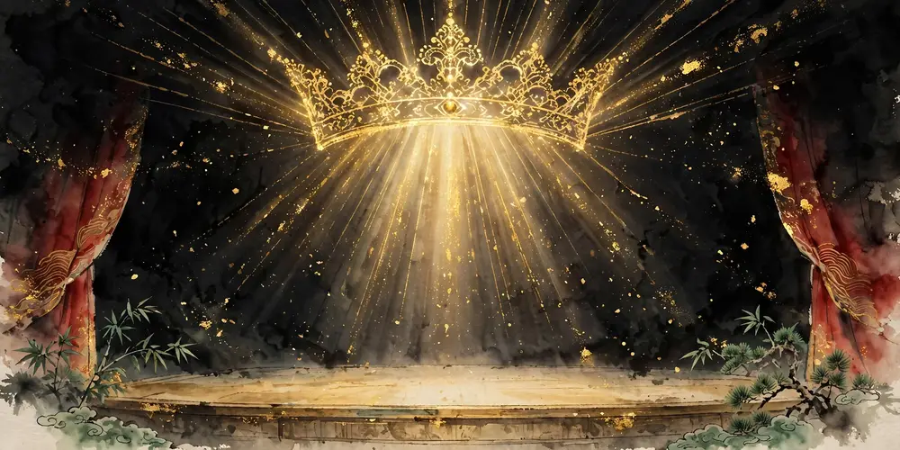
「舞台並不是單純為了展現，而是一種給予與成全。」—— 劉雅萍，Owlting 專訪，2025 年 9 月 23 日
「我值得，我閃亮。」
劉雅萍勉勵每一位站上舞台的女性（Owlting 專訪）「美感是一種尊重。」
對自己、對他人，更是對生活的敬意（Owlting 專訪）蜜雪兒・歐巴馬：「成功不是你賺了多少錢，而是你在他人生命中帶來多少改變。」——這是劉雅萍最喜歡的一句話，也是她作為主席的核心理念。（引言出處：歐巴馬，非劉雅萍原創）
香奈兒：「優雅不是與生俱來的，而是選擇。」——她特別認同的一句話：即使在人生最艱難的時刻，仍要選擇展現美與優雅。（引言出處：香奈兒）
旗袍走進戲院、走進家庭。公益對她來說，不是活動結束後的附帶行程，而是舞台的另一半。
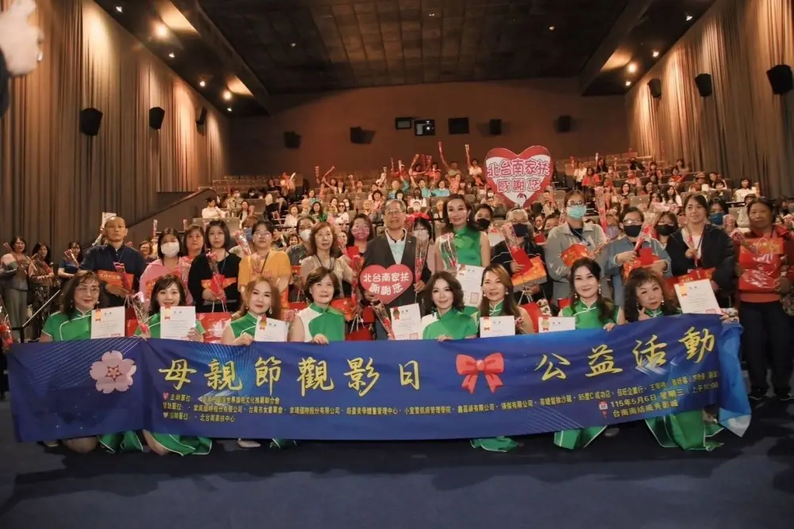
2026 年 5 月 6 日，臺南世旗攜手北臺南家扶中心，在南紡影城舉辦「母親節觀影日公益活動暨捐贈儀式」，邀請自強家庭及協會成員共 200 人走進戲院，觀賞勵志電影《陽光女子合唱團》，為弱勢家庭注入溫馨祝福。
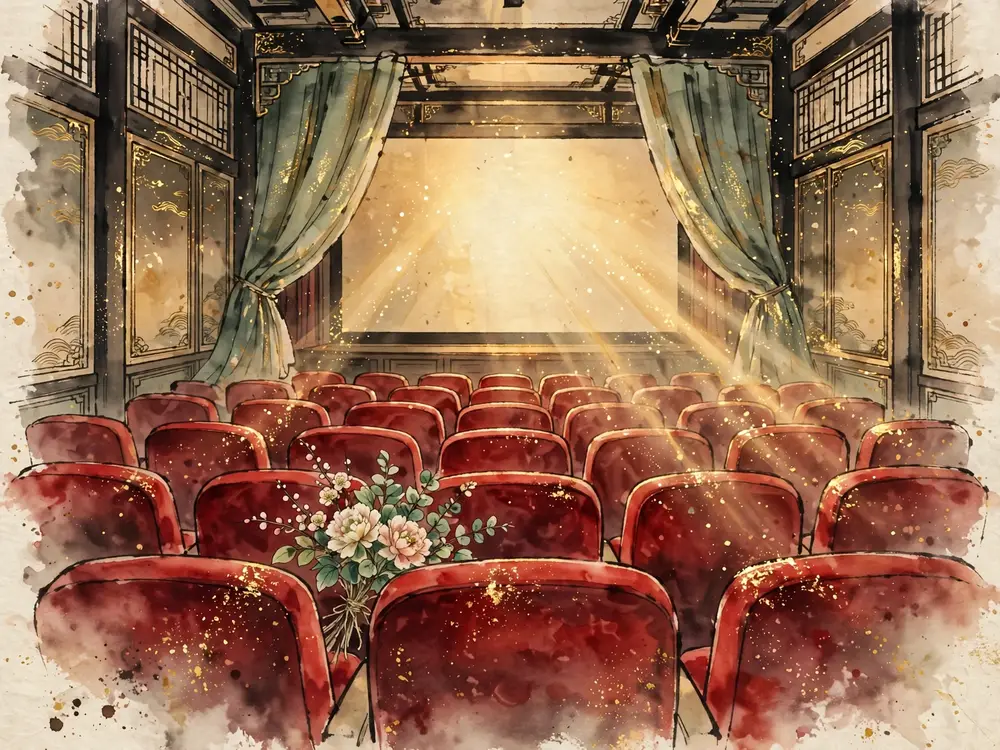
包場觀影，讓家扶家庭在壓力之餘，享有療癒時光；陪伴與交流，讓被扶助者感受到尊重與支持。
每戶 2,000 元佳節紅包與精美禮品（家扶說法），慰勞家長們的辛勞，激發生命韌性。
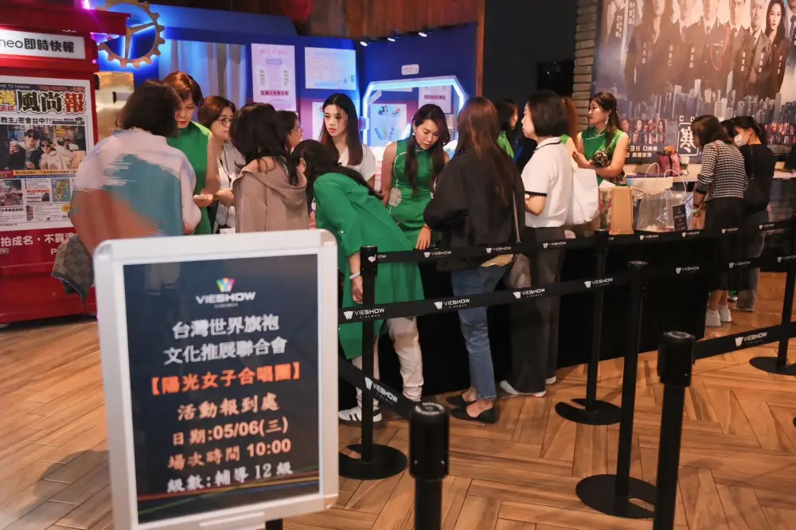
捐贈儀式、志工公益日、公益音樂會——把善意變成一場場實際到場的行動，引發善的循環。
2025 世界旗袍皇后國際大賽 10 月 12 日至 17 日活動中，安排志工公益日，讓各國佳麗在比賽之外，一起做公益。（出處：蕃新聞）
南紡影城，攜手北臺南家扶中心，200 人觀賞《陽光女子合唱團》。（出處：大成報／蕃新聞）
協會主辦的公益音樂會，現場舉行捐贈儀式。（出處：協會 FB 貼文；場地與金額說法未統一，待確認）
她盼望，每一份無私的辛勞，都被社會看見。
劉雅萍談母親節公益活動（大成報／蕃新聞 2026 年 5 月 6 日報導轉述）從台南村莊的長女，到三個女兒的母親，再到國際大賽主席——她談舞台、談低潮、談信仰，也談「我值得，我閃亮」。
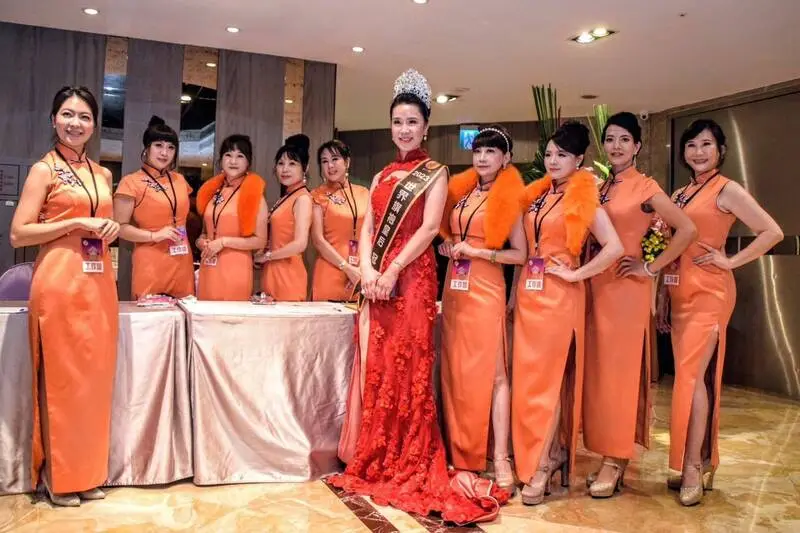
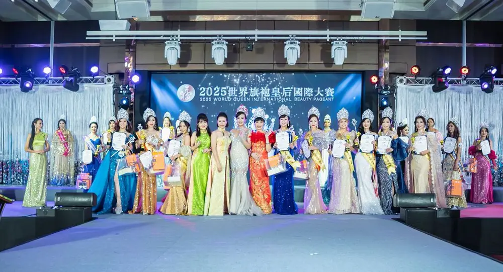
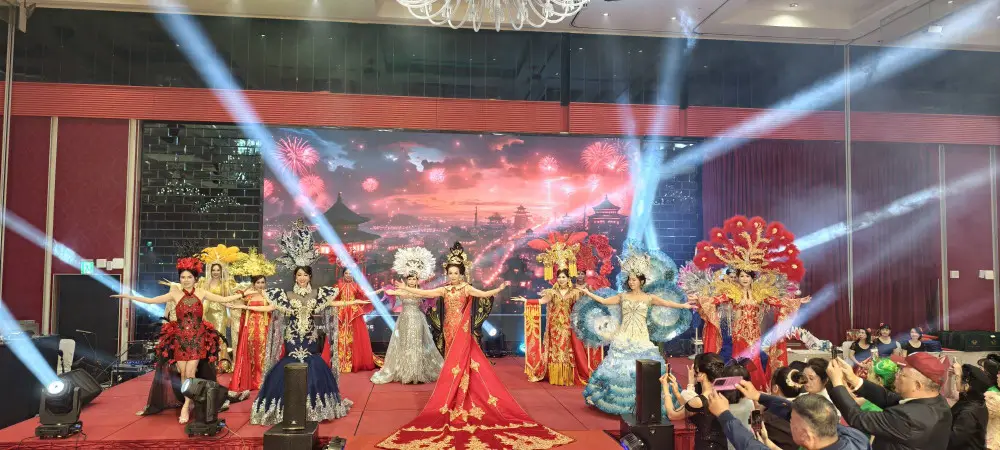
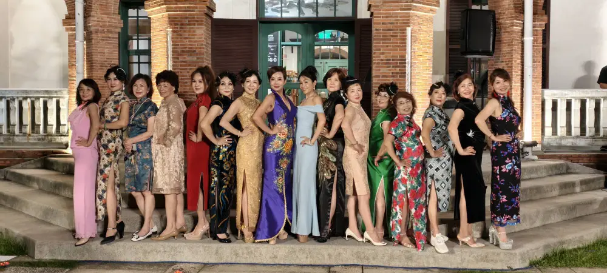
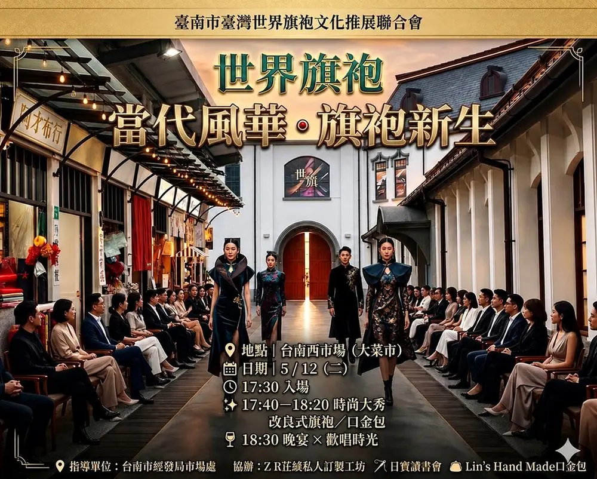
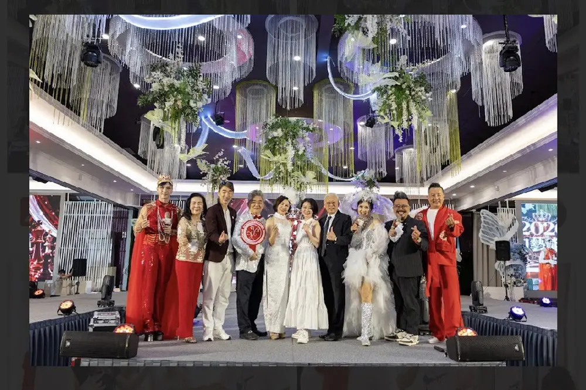
點照片可以放大，左右鍵切換。每一張都註明了場合與身分，認不出來的就不硬指認。
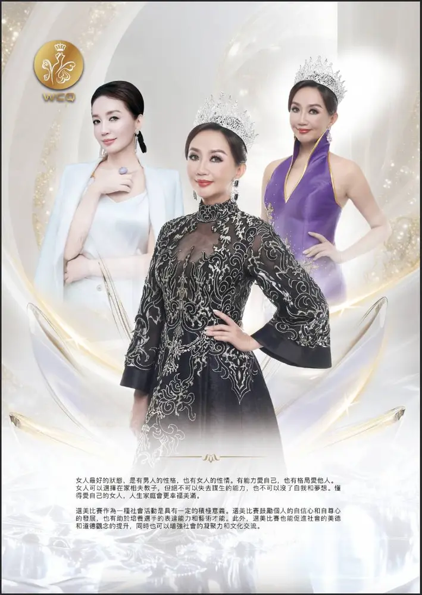
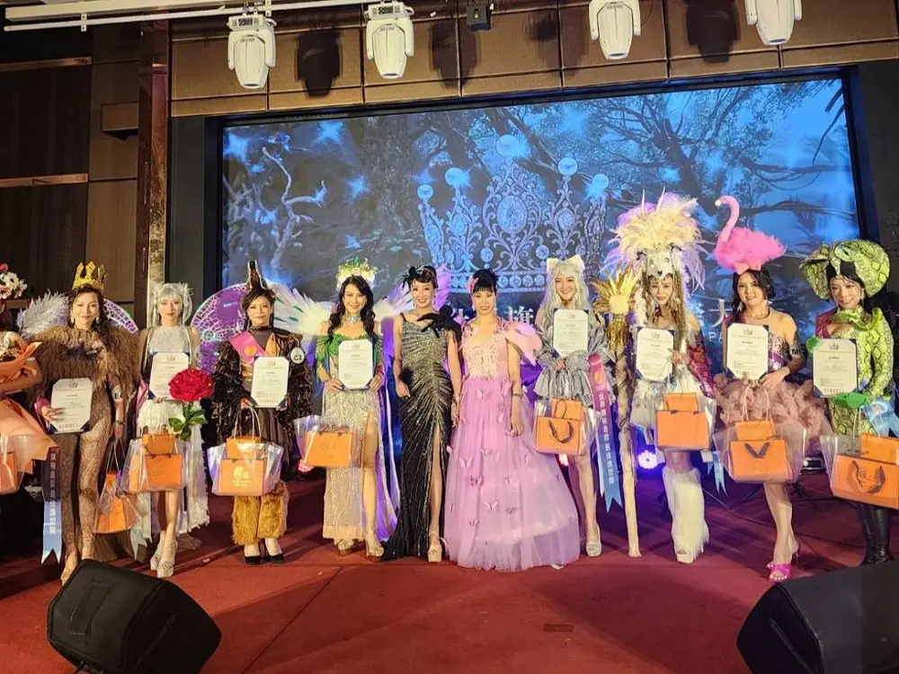
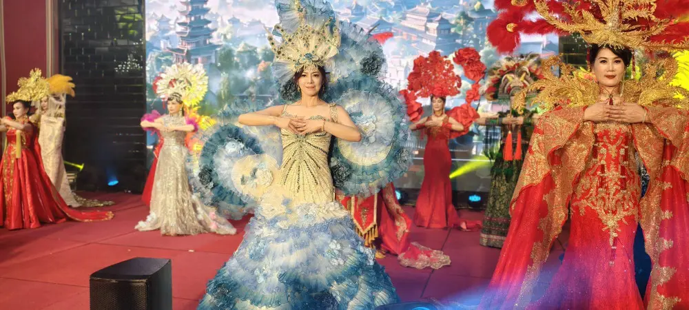
照片共 15 張：公開管道可取得、且確認與本人或本次活動相關的照片就是這些；社群上未驗證身分的照片不敢冒用。歡迎本人提供更多照片，我們再補上。
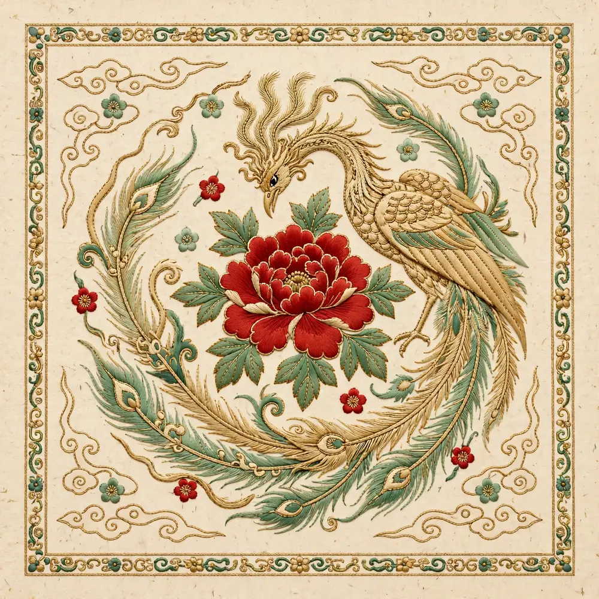
稱謂說明：各家報導對劉雅萍的稱謂有「理事長」與「會長」兩種，本頁主稱謂統一用「理事長」，活動原名保留報導寫法。